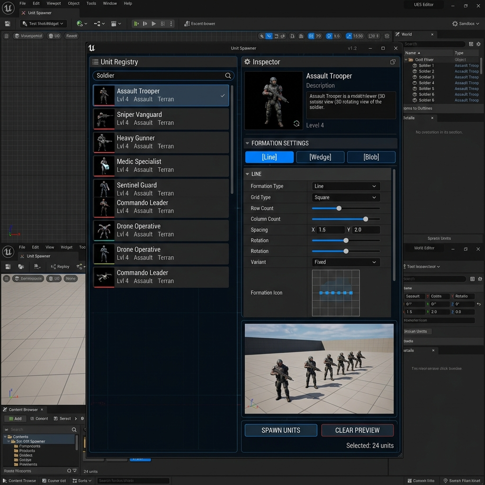
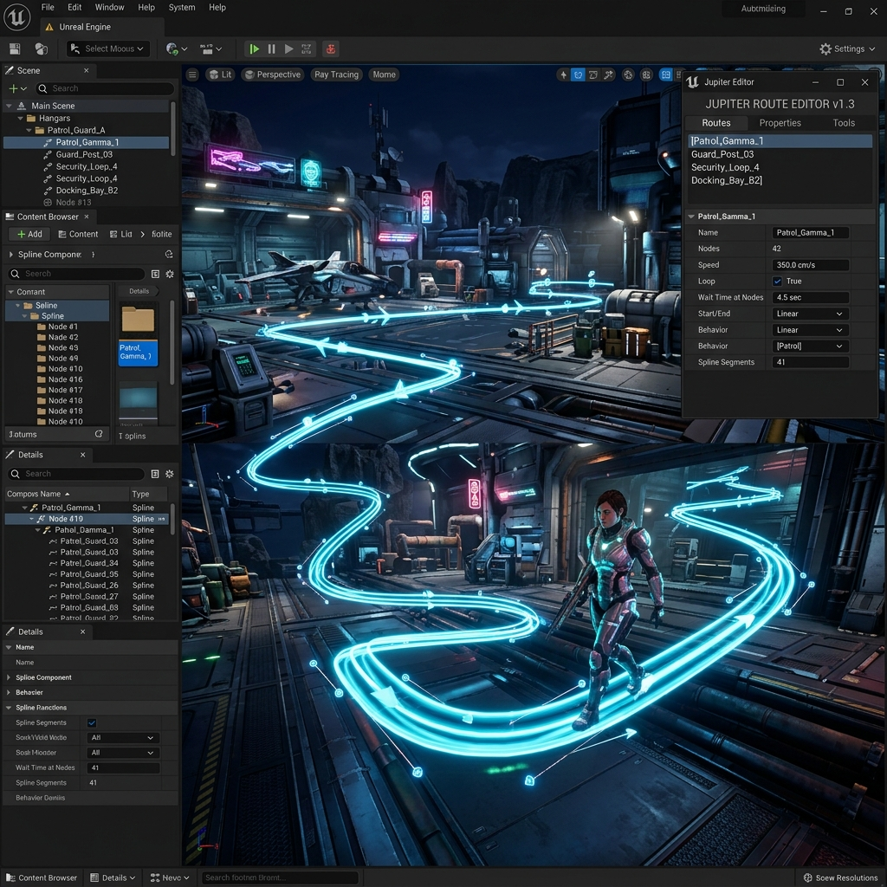
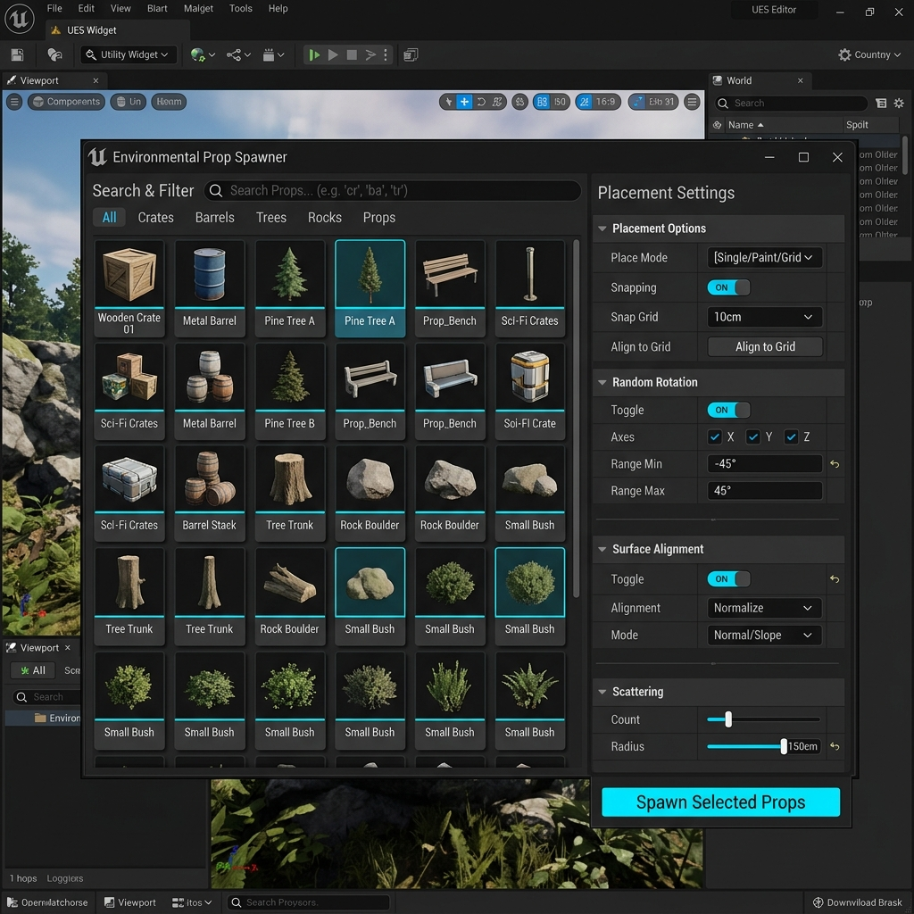

MISSION CONTROL ANALYSIS _
Jupiter est une suite d'animation temps réel inspirée du système Zeus d'Arma 3. Conçue pour les serveurs Roleplay, elle permet aux Game Masters de manipuler le monde, de spawner des entités et de diriger des scénarios à la volée avec une interface omnisciente.
OMNISCIENCE: MASTER VIEW ARCHITECTURE
La MasterView Camera permet au GM de survoler le champ de bataille. Son architecture repose sur un orchestrateur central délégant les interactions à des systèmes isolés.
- Movement System: Mouvements fluides, zoom et navigation orbitale autour des points d'intérêt.
- Selection System: Sélection d'unités ou de groupes de joueurs pour intervention directe.
- Command System: Attribution d'ordres contextuels (Déplacement, Garde, Attaque) en un clic.
UCameraSystemBase.LIVE MANIPULATION TOOLS
Le cœur du GM Tool est le UJupiterEditorPanel, offrant des outils d'édition 'run-time' hautement modulaires.
TOOL A: UNIT SPAWNER (Page_UnitSpawn)
Outil principal pour le peuplement de niveaux. Gestion avancée de catalogue via UUnitsSelectionDataAsset.
- Filtrage Dynamique: Système de recherche textuelle et filtrage par tags pour naviguer rapidement dans de grandes bibliothèques d'unités.
- Inspecteur Pliable: Panneau latéral pour configurer les propriétés de spawn (Nombre d'unités, Formation initiale, Axe d'orientation).
- Ghost Previz: Injection de dépendance pour afficher un "fantôme" de l'unité sous la souris avant validation.


TOOL B: PATROL MANAGER (Page_Patrol)
Système de création de routes IA basé sur des Splines. Permet une édition visuelle fluide.
- Spline Integration: Dessiner et modifier des courbes de Bézier directement dans le monde.
- Liste & Détails: Interface maître-détail pour ajuster vitesse, pauses aux nœuds et boucles de mouvement.
- Live Feedback: Le delegate
HandleRoutesChangedassure la synchronisation UI/Monde en temps réel.
TOOL C: PROP SPAWNER (Page_PropSpawn)
Un puissant éditeur d'habillage temps réel s'appuyant sur une base de données de presets et une capture directe du monde.
- Preset Registry: Enregistrement et déploiement de configurations d'objets via le
UPresetManagerComponent. - Commit to Registry: Système de capture de la sélection actuelle (`SelectionComponent`) pour créer des presets à la volée.
- Deployment System: Placement instantané des presets dans le monde via le
CameraPlacementSystempour une orchestration rapide.

UI ARCHITECTURE: THE PAGE SYSTEM
L'interface repose sur une architecture modulaire où chaque outil est une "Page" indépendante. Le pattern **Master-Detail** sépare la navigation (liste à gauche) de l'édition (inspecteur à droite).
// Page_PropSpawn.cpp snippet void UPage_PropSpawn::BuildPresetHeader(TObjectPtr<USizeBox> Container) { // Using the Tactical UI Factory for consistent military aesthetics TObjectPtr<UOverlay> HeaderOverlay = UJupiterUIFactory::CreateMilitaryHeader(Tree, TEXT("DATABASE : PRESETS"), UJupiterUIFactory::Color_CyanAccent); Container->AddChild(HeaderOverlay); Btn_OpenPreset = UJupiterUIFactory::CreateHologramIconButton(Tree, TEXT("/JupiterPlugin/UI/Textures/T_Chevron"), 14, FLinearColor::White); HeaderOverlay->AddChildToOverlay(Btn_OpenPreset); }
(Selector)
(Properties)
UI STYLING & DESIGN SYSTEM
Permet aux GMs de personnaliser leur interface via UJupiterThemeDataAsset. Gestion dynamique des couleurs, polices et styles de bordure sans modification de code.
- Data Driven: Changement de thème instantané à partir d'un simple fichier de données.
- Visual Consistency: Garantit que tous les outils du plugin partagent la même identité visuelle.
- Extensibility: Facilité d'ajout de nouveaux styles pour les différents types d'événements.
AI & AUTONOMY _
RTS Controller Logic
La classe AAiControllerRts surcharge le contrôleur standard pour gérer les ordres vectoriels complexes.
Behavior Tree Integration
Le système expose des delegates Blueprint permettant aux Behavior Trees de réagir sans couplage C++.
MATH LIBRARY & FORMATIONS
Le positionnement des unités repose sur UFormationMathLibrary, fournissant des algorithmes géométriques déterministes.
- Geometric Patterns: Calculs vectoriels pour formations (Ligne, Colonne, Carré, Triangle, Blob).
- Determinism: Pour la formation 'Blob', un seed assure la stabilité réseau.
- Path Projection: Algorithme performant pour projeter une position sur le segment de patrouille.